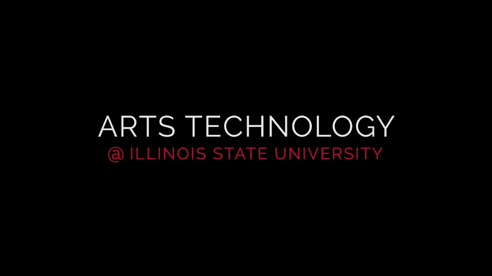

116 Center for Visual Arts
Phone: (309) 438-2875
Director: Aaron Paolucci
Degrees Offered: B.A., B.S.
MAJOR IN CREATIVE TECHNOLOGIES
The major in Creative Technologies is an interdisciplinary program in the College of Fine Arts that emphasizes theory, design, and practice in the application of computer technology to art, music, and theatre and dance. The degree provides undergraduate training and experiences in creative technologies to better prepare students with a broad range of knowledge and skills in multimedia design, including digital video and sound, computer graphics and theatre design, digital and MIDI music, and Web design.